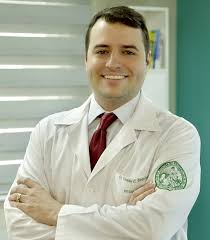

Fundado com o objetivo de proporcionar cuidados médicos de excelência e humanizados, o nosso consultório tem como princípio a busca incessante pelo bem-estar dos nossos pacientes. Desde sua inauguração, a equipe se dedica a oferecer um atendimento personalizado, em um ambiente acolhedor e moderno. Nosso compromisso com a saúde e o cuidado integral reflete a experiência e competência dos nossos profissionais, que estão sempre atualizados com as mais recentes práticas médicas e tecnologias.
Dr. João Silva Especialidade: Clínica Geral Formação: Universidade XYZ, 2005 Experiência: Com mais de 15 anos de experiência na área de clínica geral, Dr. João é especializado no diagnóstico e tratamento de doenças comuns, com um enfoque em cuidados preventivos e gestão de saúde contínua.
Dra. Maria Oliveira Especialidade: Ginecologia e Obstetrícia Formação: Universidade ABC, 2008 Experiência: Dra. Maria possui uma vasta experiência em saúde feminina, desde a prevenção até o acompanhamento durante a gestação. Sua abordagem é sempre cuidadosa e focada no bem-estar da paciente.
Dr. Carlos Pereira Especialidade: Cardiologia Formação: Universidade DEF, 2010 Experiência: Com especialização em cardiologia, Dr. Carlos atua no diagnóstico e tratamento de doenças cardíacas, sempre com um atendimento personalizado e focado na prevenção de complicações.
Dr. Ricardo Almeida Especialidade: Ortopedia e Traumatologia Formação: Universidade JKL, 2011 Experiência: Dr. Ricardo é especialista em ortopedia e traumatologia, com vasta experiência no tratamento de lesões musculoesqueléticas, fraturas e doenças articulares. Sua abordagem é focada na recuperação funcional do paciente, sempre buscando a melhor solução para cada caso, seja com tratamentos conservadores ou intervenções cirúrgicas quando necessário. Além disso, ele valoriza a educação do paciente, explicando detalhadamente sobre o diagnóstico e o plano terapêutico.
Proporcionar cuidados médicos de qualidade, com excelência e humanização, visando o bem-estar e a saúde integral dos nossos pacientes.
Ser um centro de referência em saúde, reconhecido pela competência de nossos profissionais e pelo atendimento de excelência, sempre em busca de inovação e evolução no cuidado.
Humanização no atendimento Compromisso com a saúde Ética e transparência Atualização contínua Respeito e empatia com cada paciente